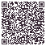

Momcozy 北美预发布
Android 测试安装包 · v1.0.0 (77) · 仅适用于 arm64

下载 Android APK这是公开链接的 debug 签名测试包，不是商店正式版。使用邮箱登录；如设备已有不同签名的同包名 App，安装前需卸载旧版（会清除本地数据）。
SHA-256: 953782374637ca507cc7597052a98070cde99e37581596fec51a72d754e410a8
Android 测试安装包 · v1.0.0 (77) · 仅适用于 arm64

下载 Android APK这是公开链接的 debug 签名测试包，不是商店正式版。使用邮箱登录；如设备已有不同签名的同包名 App，安装前需卸载旧版（会清除本地数据）。
SHA-256: 953782374637ca507cc7597052a98070cde99e37581596fec51a72d754e410a8